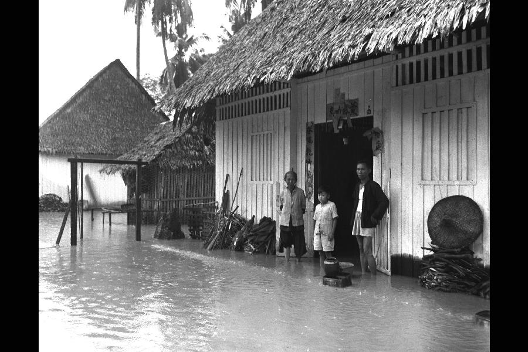

2021
.
.
.
1913
Fiona Williamson (SMU)
2021
.
.
.
1913
On this much more detailed map from 1893 you can see the Kendang Kerbau Hospital’s observatory, which was an important part of the Hospital and is marked in a courtyard as "Meteorological Observatory".
In 1877, Singapore suffered a drought of exceptional magnitude. Crossing ten months from February to late November, the normal inter-monsoon period of dry weather interspersed with severe thunderstorms (March to May) and the Southwest monsoon (June to September) never materialised. Rainfall fell to some of the lowest levels since rainfall records had started to be kept consistently in 1869 at 65.14 inches for the year. To put this into perspective, a modern average annual rainfall (1981-2010) is just over 85 ins, thus 1877 was not only much lower overall than what might be considered normal, but it was also concentrated around the early part of the year and late December. The drought’s natural instigator was the El Niño phase of the El Niño Southern Oscillation (ENSO), but it was made a disaster by insufficient water reserves and water management in the rapidly growing town. Most inhabitants relied on an antiquated system of wells, tanks and small reservoirs situated in and around the town centre for their water, despite some investment in improving the clean water infrastructure by the municipal government. Piped water to domestic dwellings was a privilege only for the wealthy and the system of ceramic underground piping for water and for drainage then commonplace in many British cities had not been adopted in Singapore. In desperation, even pseudo-scientific theories were discussed (though not enacted) to trigger rain, including cannonading using artillery and gunpowder held at the garrison at Fort Canning (Straits Times Overland Journal, 28 April 1877, p. 7). The drought continued into the autumn, bringing with it sporadic outbreaks of cholera and the loss of many important plant species at the botanic gardens. Fires were common and feared. In Singapore during November, for example, a major fire started in the grounds of a bungalow in the wealthy European Tanglin area, caused by a stray spark in the lalang (weeds) which were ‘dry as tinder owing to the prolonged drought’ (The Straits Times, 24 November 1877). The drought finally ended in the December, around the same time as the new Impounding Reservoir was opened (MacRitchie Reservoir). It was hoped that the new facility would bring an end to Singapore’s water problems in the future.
For further reading, see:
Brenda Yeoh, ‘Urban Sanitation, health and water supply in late nineteenth and early twentieth century colonial Singapore’ Southeast Asia Research 1, 2 (1993), 143-72.
Fiona Williamson, ‘Responding to Extremes: Managing Urban Water Scarcity in the Late Nineteenth-Century Straits Settlements’, Water History (October, 2020).
This image shows the level of detail that was kept about the weather by the early 20th century. Published in 1912, the Kandang Kerbau meteorological record actually covers the previous spring of 1911 when Singapore was living through the early stages of a severe drought. Like 1877, this drought was also inspired by a severe El Nino event but made worse because of inadequate mainland water reserves for the rapidly growing urban population.
Singapore has two annual monsoon periods, the most severe occurring during November to January known as the northeast monsoon. This brings heavy rains, storms and flash-flooding. The city is a low-lying coastal port, with three major rivers (Singapore, Rochor and Kallang), built across what were once large swathes of marsh and swampland. Tidal flooding, riverine flooding, and monsoonal flooding were therefore common hazards in the past. Whilst every year saw floods, at least once in every decade or so across Singapore’s history from 1819 to 1954, there occurred a particularly severe event that went down in popular memory as a ‘Great Flood’. December 1954 was once such occasion.
There were exceptionally heavy rains in Singapore over the December and early-January (possibly stimulated by a La Nina event), along with high tides. The combination created a series of flood events that affected the city and its surrounding hinterlands. The worst affected areas were coastal and low-lying around the north-east and east of the city but at least 10,000 inhabitants across Singapore were affected to some degree. Five thousand people became temporary refugees, many losing their homes and livelihood in the process. Five people died – a family – during an abortive rescue operation. Many farmers in the Paya Lebar, Geylang Serai and Bedok area lost their animals and crops and had to seek compensation and start-up packages from the government to restart their lives again.
For further reading, click here.
A majority of the campaigning for the 1955 election had taken place between January and March 1955, with rallies especially aimed at Chinese communities of the recently devastated flood zones. In Paya Lebar, there was a 50% turnout, with two candidates: Lim Koon Teck as an independent and Tan Eng Joo for the Democratic Party. Lim won by a slim majority. Interestingly, Lim had been very active in post-flood rehabilitation in Paya Lebar, whilst Tan had kept a low profile (Ong, 1982: reel 32). Ong Chye Hock, independent candidate in the later 1959 Legislative Assembly elections and an active member of various farming and community organisations in the Paya Lebar area during the fifties and sixties, offers a unique perspective on the floods and their intersection with contemporary politics of the mid-fifties. Ong had been at the centre of the 1955 Paya Lebar election and knew both Lim Koon Teck and Tan Eng Joo well. He had also helped form a flood relief committee and had asked Lim to come on board. Ong, Lim, and a few others carried out a door-to-door post-flood campaign to register household loss and damage. Lim had also approached the Salvation Army for rice and clothes, especially for the surviving members of the family who had died at Potong Pasir in December ’54 both of which were covered by the press. Ong firmly believed that Lim's involvement with the local community and the broad media coverage were what helped him defeat the democratic party candidate Tan Eng Joo. Lim had been active in the area between 1953 and 1955 and had visited the victim's families, while Tan had never ‘showed face’ (Ong, 1982: reel 32).
References:
Ong CH (1982) Oral History Recording: Ong Chye Hock, 000168. National Archives of Singapore.
Further reading:
Fiona Williamson, ‘Responding to Extremes: Managing Urban Water Scarcity in the Late Nineteenth-Century Straits Settlements’, Water History (October, 2020).
Attributions:
Map of Singapore showing the Principal Residences and Places of Interest (1913): National Archives of Singapore, Media – Image 20120001590 –0006,1913, Singapore, courtesy of the National Archives of Singapore.
Plan of Singapore Town Showing Topographical Detail and Municipal Numbers (1893): National Archives of Singapore, Media Image 20140000077 — 0195, 1893, Survey Department, Singapore, courtesy of the National Archives of Singapore.
“Singapore Residency” map (1860); showing the 11 observatories: National Archives of Singapore, Media Image 2016HDD0001 - 0535_WO78_2256, c.1860, original map held by The National Archives, United Kingdom, courtesy of the National Archives of Singapore.
Straits Settlements Government Gazette, 19 July 1912
Rainfall layer B03
Photo of floods at Bedok, Singapore, 1954: National Archives of Singapore, Media Image 19980001092—0009, 09 December 1954, Ministry of Information and the Arts Collection, courtesy of the National Archives of Singapore.